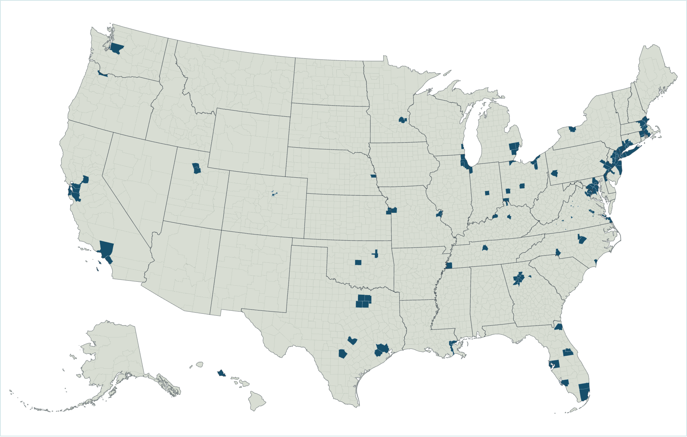
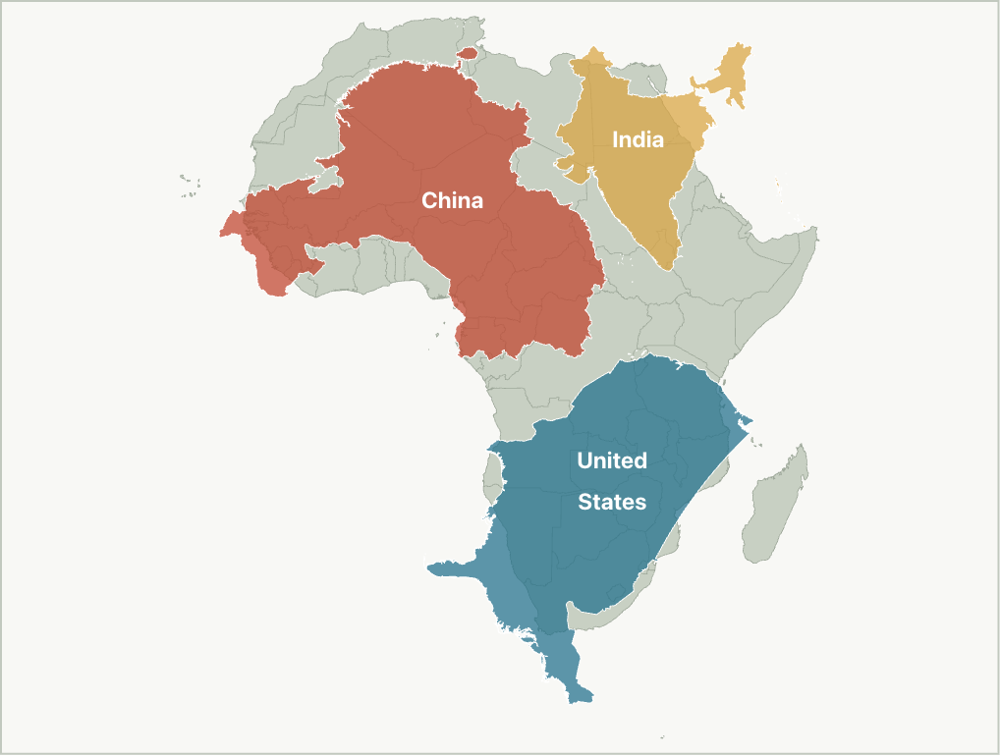
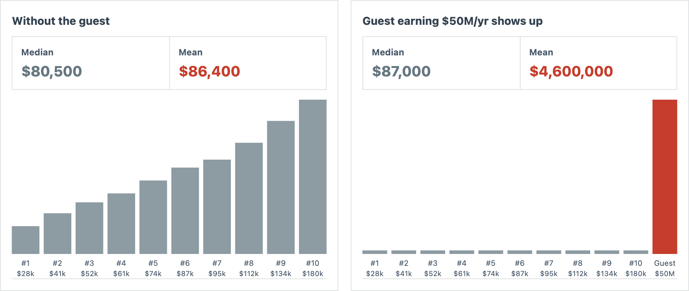
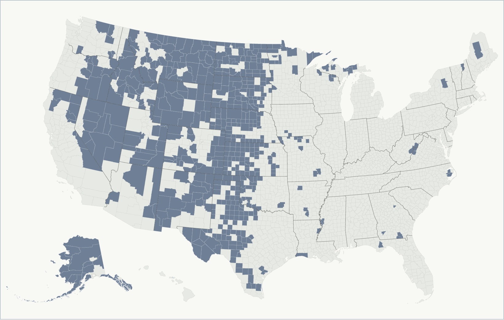
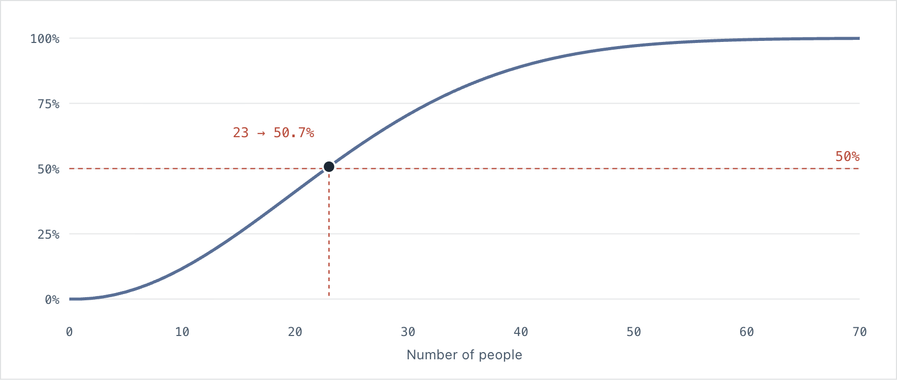
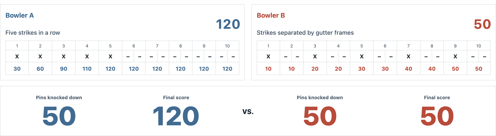
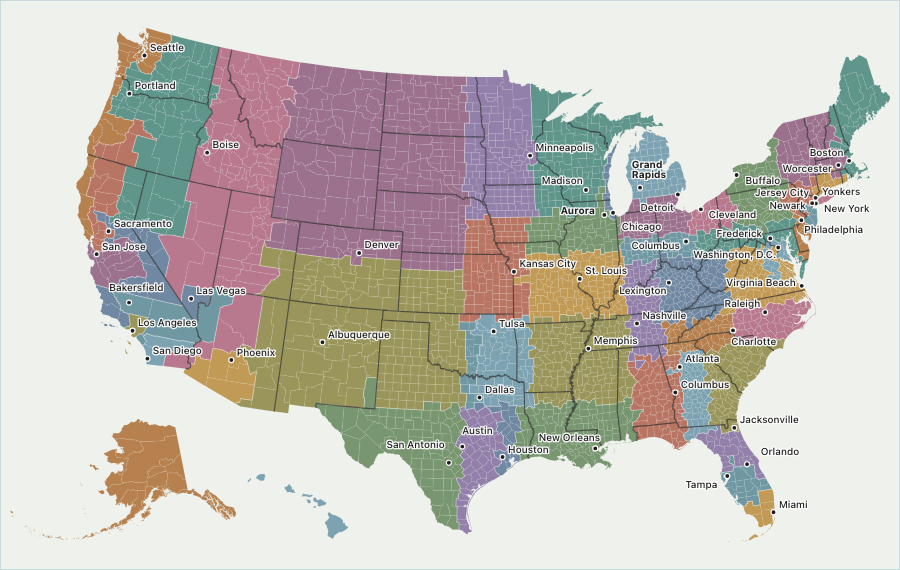
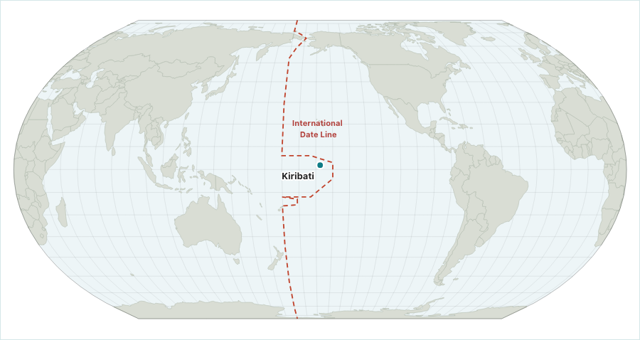
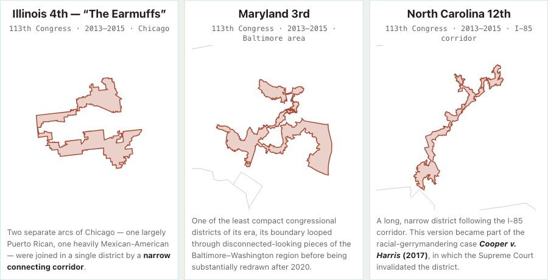

Featured
Patterns
How much of America holds 40% of its people?

Explore by idea
Perspective
See the familiar differently.
What is the correct name for this sea?
Scale
How big, far, or numerous is it really?

How big is Africa... really?
Measurement
What changes when we change the measure?

What’s the average income at this BBQ?
Patterns
What does the whole hide?

How much of America is almost empty?
Probability
When does intuition get the odds wrong?

How many people does it take before a shared birthday is more likely than not?
Connections
What changes when things interact?

Can two bowlers knock down the same 50 pins and finish 70 points apart?
Newest

What would America look like if every state had the same population?
Fifty regions. Roughly equal populations. Radically different shapes.

What does the world look like when somewhere else is in the middle?
Recenter the world on a small island in the Pacific.

Could a real congressional district actually look like this?
Three actual U.S. congressional districts, drawn to their real boundaries.
Why Hanten?
反転 (hanten) is a Japanese word meaning reversal, inversion, or turning something over.
That idea is at the heart of Hanten: look again. Change the perspective, scale, measure, or frame, and something familiar can reveal a very different story.
Understanding is discovered, not delivered.